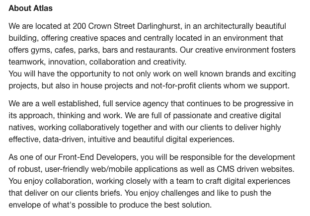
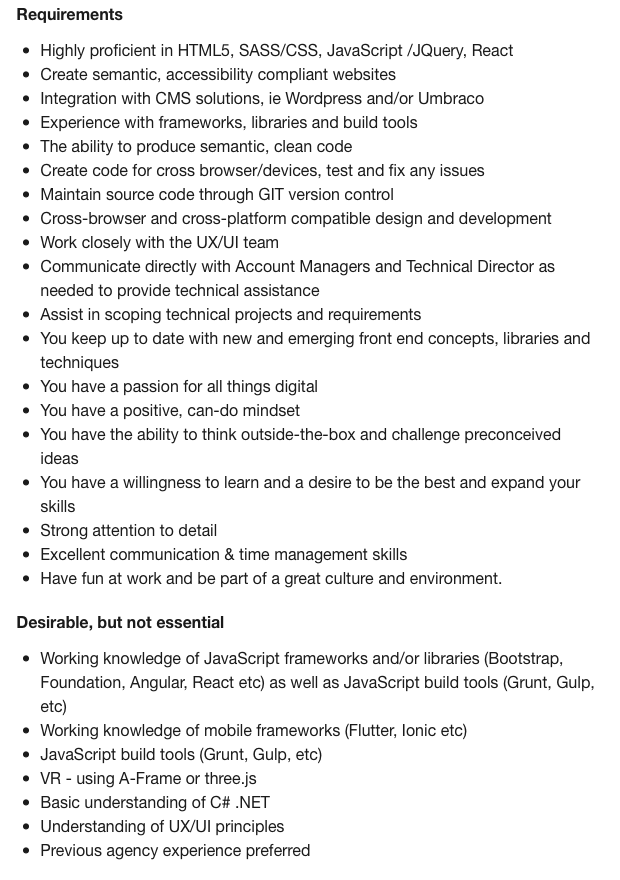

The job as a Front-End Developer for Atlas Digital Agency requires employees to create websites and applications for clients which are engaging and accessible to users. The job requires collaborative employees to work together to develop and design a product the clients would be happy with, and users would want to visit and use. I personally like the idea of a job in which I can work innovatively with a team to create a product which would satisfy and fulfil a client’s desires. I do also “enjoy challenges” which come with the role.
I think I have the last point, about being positive and passionate about my work, and am definitely always looking for a new challenge. This assignment is my first time working with HTML, so I will definitely need to improve and learn a lot more about the language as well as other programming languages, however, I expect to develop it throughout my courses at RMIT. I am actually very limited in my knowledge and experience in the IT field due to my school not teaching the subject, therefore I have a lot to learn and gain before being qualified for the job. I also require some experience in the field before fulfilling all the specifications for the job.
In order to develop and build on my limited skill set, I plan on playing around with programming languages a lot more in my spare time, including HTML and CSS. I will complete the Bachelor of Information Technology at RMIT, which will give me a better understanding of the areas of IT and help me progress towards becoming a Front-End Developer.
 